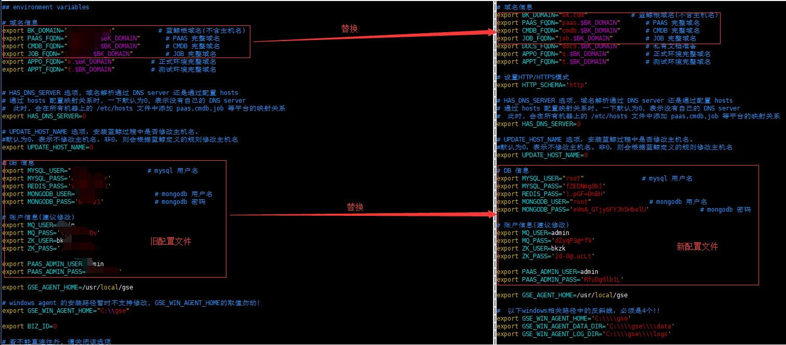

社区版 V4.1.16 升级至 v5.1 指引
升级前准备
查看 MySQL 占用磁盘空间大小
由于社区版 5.1 的 MySQL 版本从 5.5 升级到 5.7，且蓝鲸组件已经适配 MySQL5.7，所以本次升级的开源组件有
MySQL、Redis、Nginx、consul。当 MySQL 数据量超过 50G 以上的，可根据自身情况考虑是否清理部分日志表。
清理的方式：只用链接到 MySQL 数据库后使用 truncate 或 delete 的方式。
解压
src停进程
cd /data/install echo fta bkdata appo appt gse job cmdb paas redis nginx consul license | xargs -n1 ./bkcec stop # 观察进程是否为EXIT echo fta bkdata appo appt gse job cmdb paas redis nginx consul license | xargs -n1 ./bkcec status备份 src 目录
# 中控机执行 # （必须）请一定用 mv 备份 src 目录!!! cd /data mv src src.bak备份 install 目录
cd /data #请不要使用 mv命令备份，一定使用cp备份install目录，不然会导致app.token发生改变。 cp -a install install.bak解压包
tar xf bkce_src-5.x.x.tgz -C /data/ #整包(含src，install目录)恢复证书
cp src.bak/cert/* src/cert/恢复 CICDKit 安装包
# 如果你安装了 cicdkit 请执行下面操作，该版本目前只支持http部署，若你没有安装则跳过 cp -a src.bak/cicdkit src/ cp -a src.bak/service/mysql57 src/service/
升级部署脚本
还原部署配置
（globals.env ports.env）恢复
globals.env相关配置信息- 自行比对新老文件的差异，将旧的
globals.env文件的#域名信息、#DB信息、#账户信息、GSE\NGINX_WAN_IP、#设置HTTP/HTTPS模式同步修改到新的globals.env配置文件内，务必谨慎对比，账户密码信息至关重要，新配置文件的新增内容不可删除。 
- 自行比对新老文件的差异，将旧的
恢复
ports.env相关配置信息- 自行比对新老文件的差异，将旧的
ports.env文件的差异信息同步修改到新的ports.env文件内，如果您未修改过ports.env文件内的端口，可忽略本步骤。
- 自行比对新老文件的差异，将旧的
更新
install.config- 根据
install.config.new.sample文件的[bkce-basic]格式更新install.config文件。 示例：
# 原install.config格式 10.0.0.1 nginx，appt，rabbitmq，kafka，zk，es，bkdata，consul，fta 10.0.0.2 mongodb，appo，kafka，zk，es，mysql，beanstalk，consul 10.0.0.3 paas，cmdb，job，gse，license，kafka，zk，es，redis，consul，influxdb # 变更后的格式 [bkce-basic] 10.0.0.1 nginx，appt，rabbitmq，kafka(config)，zk(config)，es，bkdata(databus)，bkdata(dataapi)，bkdata(monitor)，consul，fta 10.0.0.2 mongodb，appo，kafka(config)，zk(config)，es，mysql，beanstalk，consul 10.0.0.3 paas，cmdb，job，gse，license，kafka(config)，zk(config)，es，redis，consul，influxdb >> Note:原则是不改变原模块所在IP的机器，只新增格式zk(config)，kaka(config)，bkdata(databus)，bkdata(dataapi)，bkdata(monitor)。\ 另：install.config.new.sample内的其他bcs相关模块如需要安装请下载相关安装包解压并新增机器部署bcs，bcs部署机器不能复用[bkce-basic]的机器。
- 根据
恢复 CICDKit 安装包
#如果你已经部署 CICDKit 请执行，若没有请忽略 cp -a /data/src.bak/cicdkit src/ cp -a /data/src.bak/service/mysql57 src/service恢复 CICDKit 脚本包
#如果你已经部署CICDKit请执行，若没有请忽略 cp -a install.bak/parse_config install/ cp -a install.bak/third/* install/third/升级前检查
# 中控机查看 cat /data/install/.path #查看安装路径是否为空 ll /data/install/.migrate/ # 查看目录下sql标记文件是否存在同步数据
./bkcec sync all #同步新的软件包Note: 执行同步过程中，可能有文件不存在的报错，报错文件是点号开头的隐藏文件，可以忽略，是因为并发 分发文件引起的，属于正常现象。

开始升级
升级开源组件
安装依赖
./bkcec install global_pypkg #安装依赖更新 Consul
./bkcec install consul ./bkcec start consul更新 Nginx
# 更新nginx paas、cmdb、job启用https。脚本自动部署使用自签名证书\ # 路径在：/data/src/cert/bk_domain.crt、 /data/src/cert/bk_domain.key # 升级Nginx版本，如果你系统是Centos7.0以下的版本需要自行编译nginx1.11.9版本安装，或者下载nginx-1.11.9-1.el6.ngx.x86_64.rpm 版本替换src/nginx/nginx-1.11.9-1.el7.ngx.x86_64.rpm 包 ./bkcec install nginx ./bkcec start nginx ./bkcec status nginx更新 Redis
./bkcec install redis # 升级Redis版本，另Centos6的系统不支持升级 ./bkcec start redis ./bkcec status redis更新 MySQL
备份数据库，也可自行选择其他方式备份数据库。
# 登陆MySQL机器执行 source /data/install/utils.fc mkdir -p /data/dbbak cd /data/dbbak cat >dbbackup_mysql.sh <<EOF #!/bin/bash ignoredblist='mysql|information_schema|performance_schema|test' dblist="\$(mysql -u$MYSQL_USER -p$MYSQL_PASS -h$MYSQL_IP -P$MYSQL_PORT -Nse "show databases;"|grep -Ewv "\$ignoredblist"|xargs echo)" mysqldump -u$MYSQL_USER -p$MYSQL_PASS -h$MYSQL_IP -P$MYSQL_PORT --skip-opt --create-options --default-character-set=utf8mb4 -R -E -q --single-transaction --no-autocommit --master-data=2 --max-allowed-packet=1G --hex-blob -B \$dblist > /data/dbbak/bk_mysql_alldata.sql EOF #执行备份操作 sh dbbackup_mysql.sh # 查看导出是否正确 grep 'CREATE DATABASE' bk_mysql_alldata.sql停止
MySQL进程# 中控机执行 ./bkcec stop mysql # 停止 MySQL 原进程 ./bkcec status mysql # 确认进程是否停止备份
MySQL5.5软件和数据目录，配置文件等# 备份，MySQL 机器执行 mv /data/bkce/service/mysql /data/bkce/service/mysql55 mv /data/bkce/public/mysql /data/bkce/public/mysql55 mv /data/bkce/etc/my.cnf /data/bkce/etc/my.cnf.55 mv /etc/my.cnf /etc/my.cnf.55安装 MySQL
# 中控机执行，升级 MySQL 版本 ./bkcec install mysql # 开始更新 ./bkcec start mysql ./bkcec status mysql恢复备份数据
# MySQL 机器执行 cd /data/dbbak # 恢复数据，等待执行完成 mysql --default-character-set=utf8mb4<bk_mysql_alldata.sql 2>err.log # 中控机重新初始化MySQL ./bkcec initdata mysql
升级蓝鲸组件
更新 License
./bkcec install license # 更新配置，适配新的端口 ./bkcec start license # 启动进程 ./bkcec status license # 查看状态更新 PaaS
./bkcec install paas ./bkcec upgrade paas ./bkcec start paas ./bkcec status paas更新 CMDB
./bkcec install cmdb ./bkcec start cmdb ./bkcec status cmdb ./bkcec upgrade cmdb更新 GSE
./bkcec install gse ./bkcec initdata gse ./bkcec start gse ./bkcec status gse #如果有个别进程显示 ERROR status 状态，是启动时间比较慢，可尝试多刷新几次。 ./bkcec pack gse_plugin更新 JOB
./bkcec install job ./bkcec upgrade job ./bkcec start job ./bkcec status job更新 BKDATA
./bkcec install bkdata ./bkcec upgrade bkdata ./bkcec start bkdata ./bkcec status bkdata更新 FTA
./bkcec install fta ./bkcec upgrade fta ./bkcec start fta ./bkcec status fta更新 PaaS_Agent
# 更新appo ./bkcec upgrade appo ./bkcec start appo ./bkcec status appo ./bkcec activate appo # 更新appt ./bkcec upgrade appt ./bkcec start appt ./bkcec status appt ./bkcec activate appt升级 SaaS
升级
saas./bkcec install saas-o #安装saas
升级 Agent
升级蓝鲸所在机器的 gse_agent 在中控机执行
cd /data/install ./bk_install gse_agen- 升级 业务机器 的 gse agent
- 请使用 【节点管理】 app 的 agent 升级功能
验证
- 各平台可正常访问